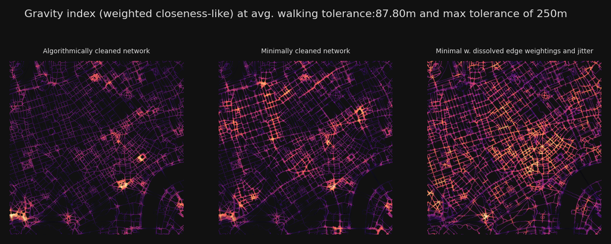
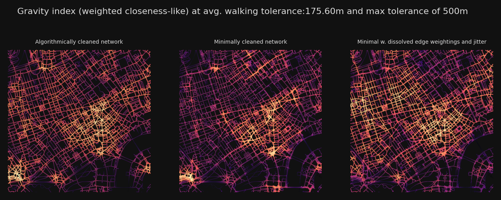
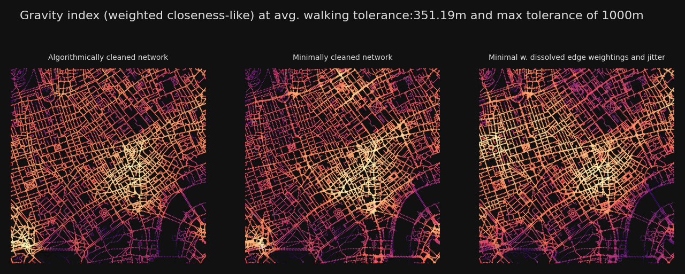
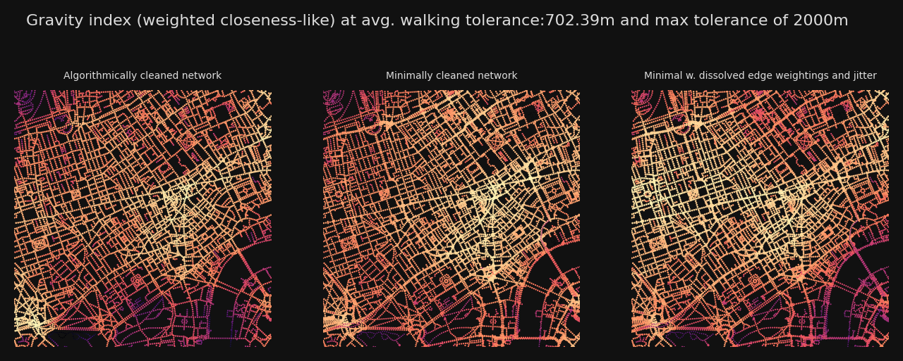
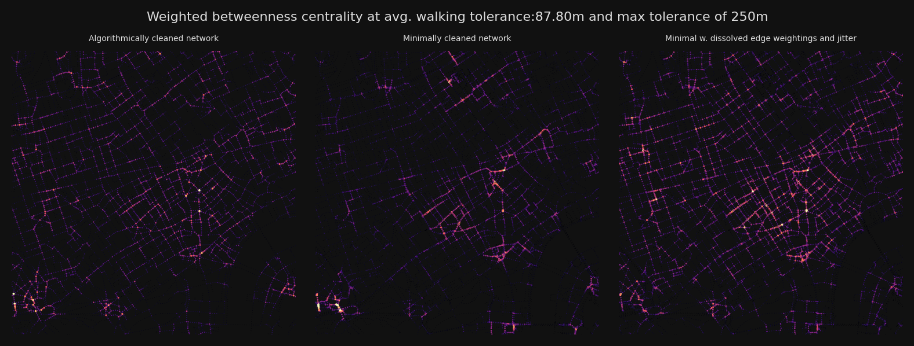
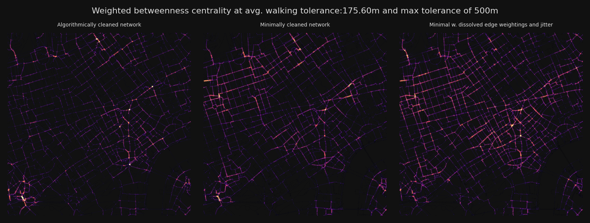
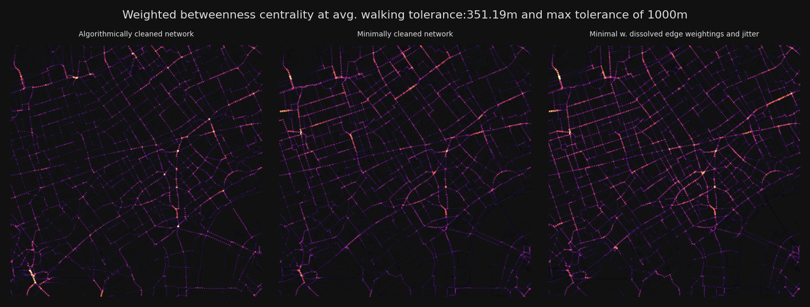
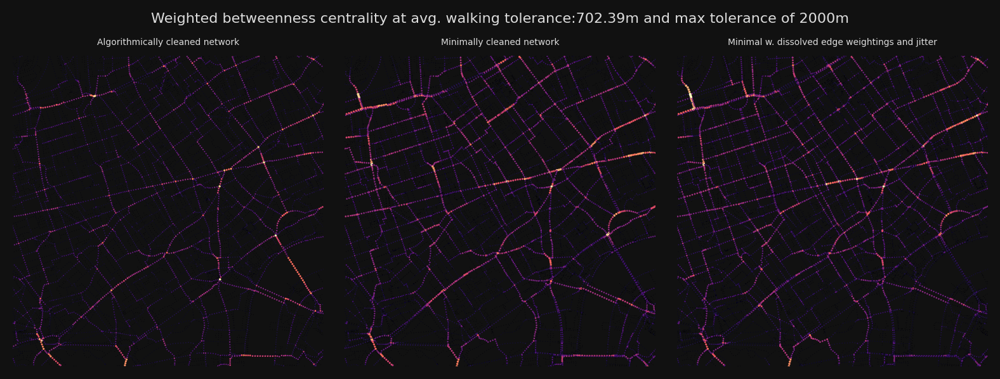

# !pip install --upgrade cityseerOSM Strategies
Install and update cityseer if necessary.
See the guide for a preamble.
Please also see the graph cleaning guide for additional information on the graph cleaning approach.
This notebook uses OSM data to compare three strategies for network preparation and then compares the centralities computed on each:
- Algorithmically cleaning and consolidating the network
- Using a minimally cleaned network which strips out unnecessary nodes but doesn’t apply any consolidation methods.
- Using a minimally cleaned network but with corrections for network distortions through edge “dissolving” and “jitter”.
Preparing the data extents
import matplotlib.pyplot as plt
from cityseer import rustalgos
from cityseer.metrics import networks
from cityseer.tools import graphs, io, plot
# download from OSM
lng, lat = -0.13396079424572427, 51.51371088849723
buffer = 5000
distances = [250, 500, 1000, 2000]
# creates a WGS shapely polygon
poly_wgs, _ = io.buffered_point_poly(lng, lat, buffer)
poly_utm, _ = io.buffered_point_poly(lng, lat, buffer, projected=True)Automatic cleaning
This approach prepares a network using automated algorithmic cleaning methods to consolidate complex intersections and parallel roads.
G_utm = io.osm_graph_from_poly(poly_wgs, simplify=True)
# decompose for higher resolution analysis
G_decomp = graphs.nx_decompose(G_utm, 25)
# prepare data structures
nodes_gdf, _edges_gdf, network_structure = io.network_structure_from_nx(
G_decomp, crs=32629
)
# compute centralities
# if computing wider area centralities, e.g. 20km, then use less decomposition to speed up the computation
nodes_gdf = networks.node_centrality_shortest(
network_structure=network_structure,
nodes_gdf=nodes_gdf,
distances=distances,
)INFO:cityseer.tools.io:Converting networkX graph from EPSG code 4326 to EPSG code 32630.
INFO:cityseer.tools.io:Processing node x, y coordinates.
100%|██████████| 162040/162040 [00:00<00:00, 438072.54it/s]
INFO:cityseer.tools.io:Processing edge geom coordinates, if present.
100%|██████████| 178697/178697 [00:00<00:00, 896442.79it/s]
INFO:cityseer.tools.graphs:Generating interpolated edge geometries.
100%|██████████| 178697/178697 [00:02<00:00, 68445.93it/s]
INFO:cityseer.tools.graphs:Removing filler nodes.
100%|██████████| 162040/162040 [00:25<00:00, 6312.45it/s]
INFO:cityseer.tools.graphs:Removing dangling nodes.
100%|██████████| 51555/51555 [00:00<00:00, 237584.81it/s]
INFO:cityseer.tools.graphs:Removing filler nodes.
100%|██████████| 44904/44904 [00:01<00:00, 38113.22it/s]
INFO:cityseer.tools.util:Creating edges STR tree.
100%|██████████| 58891/58891 [00:00<00:00, 415163.92it/s]
INFO:cityseer.tools.graphs:Splitting opposing edges.
100%|██████████| 41511/41511 [00:00<00:00, 123098.74it/s]
INFO:cityseer.tools.graphs:Squashing opposing nodes
INFO:cityseer.tools.graphs:Merging parallel edges within buffer of 30.
100%|██████████| 58891/58891 [00:01<00:00, 51264.88it/s]
INFO:cityseer.tools.util:Creating nodes STR tree
100%|██████████| 41511/41511 [00:00<00:00, 94965.87it/s]
INFO:cityseer.tools.graphs:Consolidating nodes.
100%|██████████| 41511/41511 [00:00<00:00, 158598.79it/s]
INFO:cityseer.tools.graphs:Removing filler nodes.
100%|██████████| 41511/41511 [00:00<00:00, 509769.56it/s]
INFO:cityseer.tools.graphs:Merging parallel edges within buffer of 30.
100%|██████████| 58891/58891 [00:01<00:00, 53173.99it/s]
INFO:cityseer.tools.graphs:Removing filler nodes.
100%|██████████| 41511/41511 [00:00<00:00, 614905.06it/s]
INFO:cityseer.tools.util:Creating edges STR tree.
100%|██████████| 58891/58891 [00:00<00:00, 235998.15it/s]
INFO:cityseer.tools.graphs:Splitting opposing edges.
100%|██████████| 41511/41511 [00:02<00:00, 19061.57it/s]
INFO:cityseer.tools.graphs:Squashing opposing nodes
INFO:cityseer.tools.graphs:Merging parallel edges within buffer of 25.
100%|██████████| 59469/59469 [00:01<00:00, 55940.76it/s]
INFO:cityseer.tools.util:Creating nodes STR tree
100%|██████████| 41511/41511 [00:00<00:00, 93647.37it/s]
INFO:cityseer.tools.graphs:Consolidating nodes.
100%|██████████| 41511/41511 [00:01<00:00, 32368.36it/s]
INFO:cityseer.tools.graphs:Removing filler nodes.
100%|██████████| 40527/40527 [00:00<00:00, 418696.88it/s]
INFO:cityseer.tools.graphs:Merging parallel edges within buffer of 25.
100%|██████████| 57511/57511 [00:00<00:00, 90752.74it/s]
INFO:cityseer.tools.graphs:Removing filler nodes.
100%|██████████| 40446/40446 [00:00<00:00, 204288.27it/s]
INFO:cityseer.tools.util:Creating edges STR tree.
100%|██████████| 57406/57406 [00:00<00:00, 680416.24it/s]
INFO:cityseer.tools.graphs:Splitting opposing edges.
100%|██████████| 40419/40419 [00:03<00:00, 11423.67it/s]
INFO:cityseer.tools.graphs:Squashing opposing nodes
INFO:cityseer.tools.graphs:Merging parallel edges within buffer of 25.
100%|██████████| 58169/58169 [00:01<00:00, 54530.04it/s]
INFO:cityseer.tools.util:Creating nodes STR tree
100%|██████████| 40419/40419 [00:00<00:00, 75602.15it/s]
INFO:cityseer.tools.graphs:Consolidating nodes.
100%|██████████| 40419/40419 [00:02<00:00, 17676.09it/s]
INFO:cityseer.tools.graphs:Removing filler nodes.
100%|██████████| 38792/38792 [00:00<00:00, 363861.59it/s]
INFO:cityseer.tools.graphs:Merging parallel edges within buffer of 25.
100%|██████████| 55202/55202 [00:01<00:00, 49463.93it/s]
INFO:cityseer.tools.graphs:Removing filler nodes.
100%|██████████| 38669/38669 [00:00<00:00, 440843.86it/s]
INFO:cityseer.tools.util:Creating edges STR tree.
100%|██████████| 55040/55040 [00:00<00:00, 601741.44it/s]
INFO:cityseer.tools.graphs:Splitting opposing edges.
100%|██████████| 38634/38634 [00:00<00:00, 42098.44it/s]
INFO:cityseer.tools.graphs:Squashing opposing nodes
INFO:cityseer.tools.graphs:Merging parallel edges within buffer of 25.
100%|██████████| 55146/55146 [00:01<00:00, 39349.30it/s]
INFO:cityseer.tools.util:Creating nodes STR tree
100%|██████████| 38634/38634 [00:00<00:00, 79634.42it/s]
INFO:cityseer.tools.graphs:Consolidating nodes.
100%|██████████| 38634/38634 [00:00<00:00, 39784.86it/s]
INFO:cityseer.tools.graphs:Removing filler nodes.
100%|██████████| 38199/38199 [00:00<00:00, 519671.04it/s]
INFO:cityseer.tools.graphs:Merging parallel edges within buffer of 25.
100%|██████████| 54485/54485 [00:01<00:00, 47745.91it/s]
INFO:cityseer.tools.graphs:Removing filler nodes.
100%|██████████| 38170/38170 [00:00<00:00, 495579.88it/s]
INFO:cityseer.tools.util:Creating edges STR tree.
100%|██████████| 54456/54456 [00:00<00:00, 668531.19it/s]
INFO:cityseer.tools.graphs:Splitting opposing edges.
100%|██████████| 38163/38163 [00:01<00:00, 28932.21it/s]
INFO:cityseer.tools.graphs:Squashing opposing nodes
INFO:cityseer.tools.graphs:Merging parallel edges within buffer of 25.
100%|██████████| 54617/54617 [00:00<00:00, 75056.94it/s]
INFO:cityseer.tools.util:Creating nodes STR tree
100%|██████████| 38163/38163 [00:00<00:00, 104042.24it/s]
INFO:cityseer.tools.graphs:Consolidating nodes.
100%|██████████| 38163/38163 [00:01<00:00, 32052.40it/s]
INFO:cityseer.tools.graphs:Removing filler nodes.
100%|██████████| 37484/37484 [00:00<00:00, 507041.24it/s]
INFO:cityseer.tools.graphs:Merging parallel edges within buffer of 25.
100%|██████████| 53538/53538 [00:00<00:00, 117708.33it/s]
INFO:cityseer.tools.graphs:Removing filler nodes.
100%|██████████| 37437/37437 [00:00<00:00, 502340.70it/s]
INFO:cityseer.tools.util:Creating edges STR tree.
100%|██████████| 53496/53496 [00:00<00:00, 722101.14it/s]
INFO:cityseer.tools.graphs:Splitting opposing edges.
100%|██████████| 37427/37427 [00:03<00:00, 10784.71it/s]
INFO:cityseer.tools.graphs:Squashing opposing nodes
INFO:cityseer.tools.graphs:Merging parallel edges within buffer of 25.
100%|██████████| 53796/53796 [00:00<00:00, 85636.08it/s]
INFO:cityseer.tools.util:Creating nodes STR tree
100%|██████████| 37427/37427 [00:00<00:00, 102697.57it/s]
INFO:cityseer.tools.graphs:Consolidating nodes.
100%|██████████| 37427/37427 [00:03<00:00, 9863.52it/s]
INFO:cityseer.tools.graphs:Removing filler nodes.
100%|██████████| 35323/35323 [00:00<00:00, 344694.94it/s]
INFO:cityseer.tools.graphs:Merging parallel edges within buffer of 25.
100%|██████████| 50945/50945 [00:00<00:00, 106948.01it/s]
INFO:cityseer.tools.graphs:Removing filler nodes.
100%|██████████| 35172/35172 [00:00<00:00, 586149.32it/s]
INFO:cityseer.tools.util:Creating edges STR tree.
100%|██████████| 50886/50886 [00:00<00:00, 731931.94it/s]
INFO:cityseer.tools.graphs:Splitting opposing edges.
100%|██████████| 35154/35154 [00:18<00:00, 1902.97it/s]
INFO:cityseer.tools.graphs:Squashing opposing nodes
INFO:cityseer.tools.graphs:Merging parallel edges within buffer of 25.
100%|██████████| 57668/57668 [00:04<00:00, 12880.58it/s]
INFO:cityseer.tools.util:Creating nodes STR tree
100%|██████████| 35154/35154 [00:00<00:00, 97327.74it/s]
INFO:cityseer.tools.graphs:Consolidating nodes.
100%|██████████| 35154/35154 [00:05<00:00, 6705.32it/s]
INFO:cityseer.tools.graphs:Removing filler nodes.
100%|██████████| 27353/27353 [00:00<00:00, 76768.47it/s]
INFO:cityseer.tools.graphs:Merging parallel edges within buffer of 25.
100%|██████████| 38972/38972 [00:01<00:00, 32417.56it/s]
INFO:cityseer.tools.graphs:Removing filler nodes.
100%|██████████| 26128/26128 [00:00<00:00, 163624.19it/s]
INFO:cityseer.tools.graphs:Ironing edges.
100%|██████████| 37103/37103 [00:06<00:00, 5314.87it/s]
INFO:cityseer.tools.graphs:Merging parallel edges within buffer of 1.
100%|██████████| 37103/37103 [00:00<00:00, 42173.18it/s]
INFO:cityseer.tools.graphs:Decomposing graph to maximum edge lengths of 25.
100%|██████████| 37091/37091 [00:15<00:00, 2320.62it/s]
INFO:cityseer.tools.io:Preparing node and edge arrays from networkX graph.
100%|██████████| 93414/93414 [00:00<00:00, 109903.89it/s]
100%|██████████| 93414/93414 [00:13<00:00, 7095.40it/s]
INFO:cityseer.metrics.networks:Computing shortest path node centrality.
100%|██████████| 93414/93414 [04:53<00:00, 318.51it/s]Minimal cleaning
This method performs minimal cleaning and is used for reference point for the other two methods.
# generate OSM graph from polygon - note no automatic simplification applied
G_utm_minimal = io.osm_graph_from_poly(poly_wgs, simplify=False)
# decompose for higher resolution analysis
G_decomp_minimal = graphs.nx_decompose(G_utm_minimal, 25)
# prepare data structures
(
nodes_gdf_minimal,
_edges_gdf_minimal,
network_structure_minimal,
) = io.network_structure_from_nx(G_decomp_minimal, crs=32629)
# compute centrality
nodes_gdf_minimal = networks.node_centrality_shortest(
network_structure=network_structure_minimal,
nodes_gdf=nodes_gdf_minimal,
distances=distances,
)INFO:cityseer.tools.io:Converting networkX graph from EPSG code 4326 to EPSG code 32630.
INFO:cityseer.tools.io:Processing node x, y coordinates.
100%|██████████| 162040/162040 [00:00<00:00, 457123.94it/s]
INFO:cityseer.tools.io:Processing edge geom coordinates, if present.
100%|██████████| 178697/178697 [00:00<00:00, 864159.28it/s]
INFO:cityseer.tools.graphs:Generating interpolated edge geometries.
100%|██████████| 178697/178697 [00:03<00:00, 57340.84it/s]
INFO:cityseer.tools.graphs:Removing filler nodes.
100%|██████████| 162040/162040 [00:20<00:00, 7799.77it/s]
INFO:cityseer.tools.graphs:Decomposing graph to maximum edge lengths of 25.
100%|██████████| 70562/70562 [00:24<00:00, 2845.60it/s]
INFO:cityseer.tools.io:Preparing node and edge arrays from networkX graph.
100%|██████████| 124895/124895 [00:01<00:00, 73425.58it/s]
100%|██████████| 124895/124895 [00:19<00:00, 6558.34it/s]
INFO:cityseer.metrics.networks:Computing shortest path node centrality.
100%|██████████| 124895/124895 [07:21<00:00, 282.76it/s]Dissolving network weights
This approach doesn’t attempt to consolidate the network. Instead, it uses techniques to control for messy network representations:
- It “dissolves” network weights - meaning that nodes representing street segments which are likely duplicitous are weighted less heavily.
- It injects “jitter” to derive more intuitively consistent network routes.
# generate dissolved weights
G_dissolved_wts = graphs.nx_weight_by_dissolved_edges(G_decomp_minimal, max_ang_diff=25)
# prepare data structures
(
nodes_gdf_dissolved,
_edges_gdf_dissolved,
network_structure_dissolved,
) = io.network_structure_from_nx(G_dissolved_wts, crs=32629)
# compute centralities
nodes_gdf_dissolved = networks.node_centrality_shortest(
network_structure=network_structure_dissolved,
nodes_gdf=nodes_gdf_dissolved,
distances=distances,
jitter_scale=10,
)INFO:cityseer.tools.graphs:Generating node weights based on locally dissolved edges using a buffer of 20m.
INFO:cityseer.tools.util:Creating edges STR tree.
100%|██████████| 141552/141552 [00:00<00:00, 685747.69it/s]
100%|██████████| 141552/141552 [03:02<00:00, 773.93it/s]
100%|██████████| 124895/124895 [00:04<00:00, 27325.22it/s]
INFO:cityseer.tools.io:Preparing node and edge arrays from networkX graph.
100%|██████████| 124895/124895 [00:01<00:00, 98744.11it/s]
100%|██████████| 124895/124895 [00:21<00:00, 5874.57it/s]
INFO:cityseer.metrics.networks:Computing shortest path node centrality.
100%|██████████| 124895/124895 [05:28<00:00, 380.78it/s]Plots
Compares a selection of distance thresholds for each approach.
bg_colour = "#111"
betas = rustalgos.betas_from_distances(distances)
avg_dists = rustalgos.avg_distances_for_betas(betas)
plot_bbox = poly_utm.centroid.buffer(1500).bounds
bg_colour = "#111"
text_colour = "#ddd"
font_size = 5
for d, b, avg_d in zip(distances, betas, avg_dists):
fig, axes = plt.subplots(1, 3, figsize=(8, 3), dpi=200, facecolor=bg_colour)
fig.suptitle(
f"Gravity index (weighted closeness-like) at avg. walking tolerance:{avg_d:.2f}m and max tolerance of {d}m",
color=text_colour,
fontsize=8,
)
plot.plot_scatter(
axes[0],
network_structure.node_xs,
network_structure.node_ys,
nodes_gdf[f"cc_beta_{d}"],
bbox_extents=plot_bbox,
cmap_key="magma",
face_colour=bg_colour,
)
axes[0].set_title(
"Algorithmically cleaned network", fontsize=font_size, color=text_colour
)
plot.plot_scatter(
axes[1],
network_structure_minimal.node_xs,
network_structure_minimal.node_ys,
nodes_gdf_minimal[f"cc_beta_{d}"],
bbox_extents=plot_bbox,
cmap_key="magma",
face_colour=bg_colour,
)
axes[1].set_title(
"Minimally cleaned network", fontsize=font_size, color=text_colour
)
plot.plot_scatter(
axes[2],
network_structure_dissolved.node_xs,
network_structure_dissolved.node_ys,
nodes_gdf_dissolved[f"cc_beta_{d}"],
bbox_extents=plot_bbox,
cmap_key="magma",
face_colour=bg_colour,
)
axes[2].set_title(
"Minimal w. dissolved edge weightings and jitter",
fontsize=font_size,
color=text_colour,
)
plt.show()
for d, b, avg_d in zip(distances, betas, avg_dists):
fig, axes = plt.subplots(1, 3, figsize=(8, 3), dpi=200, facecolor=bg_colour)
fig.suptitle(
f"Weighted betweenness centrality at avg. walking tolerance:{avg_d:.2f}m and max tolerance of {d}m",
color=text_colour,
fontsize=8,
)
plot.plot_scatter(
axes[0],
network_structure.node_xs,
network_structure.node_ys,
nodes_gdf[f"cc_betweenness_{d}"],
bbox_extents=plot_bbox,
cmap_key="magma",
s_max=2,
face_colour=bg_colour,
)
axes[0].set_title(
"Algorithmically cleaned network", fontsize=font_size, color=text_colour
)
plot.plot_scatter(
axes[1],
network_structure_minimal.node_xs,
network_structure_minimal.node_ys,
nodes_gdf_minimal[f"cc_betweenness_{d}"],
bbox_extents=plot_bbox,
cmap_key="magma",
s_max=2,
face_colour=bg_colour,
)
axes[1].set_title(
"Minimally cleaned network", fontsize=font_size, color=text_colour
)
plot.plot_scatter(
axes[2],
network_structure_dissolved.node_xs,
network_structure_dissolved.node_ys,
nodes_gdf_dissolved[f"cc_betweenness_{d}"],
bbox_extents=plot_bbox,
cmap_key="magma",
s_max=2,
face_colour=bg_colour,
)
axes[2].set_title(
"Minimal w. dissolved edge weightings and jitter",
fontsize=font_size,
color=text_colour,
)
plt.tight_layout()
plt.show()






